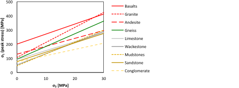
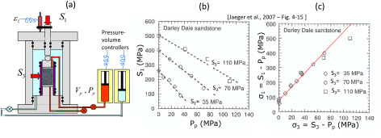
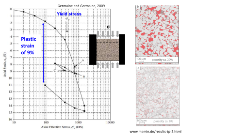
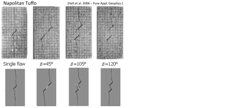

Next: 5. Stresses on Faults and Up: Introduction to Energy Geomechanics Previous: 3. Fundamentals of Solid Continuum Contents
The microstructure of rocks varies widely, from lumped crystals in igneous rocks to fossil carbonate skeletons in diatomite-rich chalk. We will discuss mostly sedimentary rocks (shown in Fig. 4.1). However, igneous rocks can also host hydrocarbons (really? how?) and constitute the basement of sedimentary basins. For example, induced seismicity from deep injection of produced-water mostly originates in basement igneous rocks. Sedimentary rocks include shales, sandstones, and carbonates among other types. The microstructure of rocks governs their failure properties and characteristics. For example, uncemented sands cannot hold tensile stresses (Fig. 4.1-a). At low mean effective stress (as in the sandboarding picture) rock failure happens through grain rotating and roll-over. Sandstone is formed by cemented grains (Fig. 4.1-b). At relatively high porosity, the strength of sandstones is dominated by the strength of cemented contacts (bonds). At failure, the bonds rather than the grains tend to break. Matrix-supported carbonates form a continuous mineral matrix (Fig. 4.1-c). Failure usually involves cracking of the solid matrix.
Petroleum and subsurface engineering involves rock failure at many length scales, from the millimeter-scale to the kilometer-scale (Figure 4.2). The failure properties of rock (and many other properties too) depend on the length scale of analysis. Small-scale process zones engage the rock “matrix” properties. Rock cutting at the drill-bit scale and wellbore stability (in homogeneous and non-fractured rock) are two examples. The samples we test in the laboratory are at this small scale as well. Large-scale process zones involve fractures, multiple sedimentary layers, and faults. For example, hydraulic fracturing tends to reactivate neighboring fractures in shear and reservoir depletion can reactivate large faults in shear as well. Recognizing the appropriate length-scale is extremely important to use adequately the rock strength measured in the laboratory and simple mechanical formulations such as linear elasticity.
Rock yield (plastic deformation) and failure can happen due to tensile stresses, shear stresses, compressive stresses, and a combination of the three. The following sections explore these types of rock damage separately.
Application of tensile stresses (with negative sign according to our geomechanics convention) on a metal bar results in tensile strains (negative too). In this example the state of stress is relatively simple with tensile stress in the axial direction and zero-stress in any direction perpendicular to the axis of the bar (Figure 4.4). The maximum tensile stress taken by the bar is called tensile strength. Metals are usually “ductile” and deform after reaching a peak stress. When unstressed, the bar in the example figure does not recover its original length but remains with “plastic deformation”.
The one-dimensional tensile strength test for metals (Fig. 4.4) is not easy to implement in rocks. You would have to grab the rock on its sides or glue it on the ends to perform such tests. Even in that case, your rock may break at the those “grabbing” points. One alternative is to “machine” the rock to a convenient shape, so that, you can pull it without using glues or grabbing jaws (shown in Figure 4.5). However, rocks are not easy to “machine” in general, and thus this test becomes impractical in many situations. Rock failure in simple tension usually displays “brittle” failure, no plastic strains follow after reaching tensile strength. It just breaks quickly.
![\includegraphics[scale=0.60]{.././Figures/split/5A-7.pdf}](img548.svg) |
The Brazilian test is a convenient method to measure tensile strength. It uses short cylindrical samples and takes advantage of the shape of the rock specimen to create tensile stresses with application of a compressive force along the sample diameter (Figure 4.6). A solution of the state of stress within the rock (assuming a linear elastic homogeneous material) yields the tensile strength value equal to
 |
(4.1) |
 is the specimen length, and is the specimen radius.
Notice that you have a combined state of stress with compression in the direction of the compressive load and tension in the direction perpendicular to the load along the diameter.
is the specimen length, and is the specimen radius.
Notice that you have a combined state of stress with compression in the direction of the compressive load and tension in the direction perpendicular to the load along the diameter.
PROBLEM 4.1: Determine the tensile strength of the shale sample shown in Fig. 4.6. The sample diameter is 1.00 in and the length is 1.00 in.
SOLUTION
The sample dimensions are
 in
in m
m
 in
in m
m
 |
Typical values of tensile strength for cemented sedimentary rocks range from 0.5 MPa to 10 MPa. Uncemented sediments -very common in sedimentary basins- have zero tensile strength. Figure 4.7 summarizes typical values of tensile strength for rocks.
![\includegraphics[scale=0.65]{.././Figures/split/4-TensStrengthSummary.pdf}](img558.svg) |
The shear strength of rocks depends on the cohesive strength of the rock  (to be explained later) and the internal frictional strength of the rock.
The frictional strength depends on friction forces, where the force
(to be explained later) and the internal frictional strength of the rock.
The frictional strength depends on friction forces, where the force  needed to displace an object resting on a surface depends on the friction coefficient
needed to displace an object resting on a surface depends on the friction coefficient  and applied normal force
and applied normal force  , such that
(Figure 4.8).
Hence, if the normal force
, such that
(Figure 4.8).
Hence, if the normal force  , then .
The frictional force increases linearly with the value of the normal force .
, then .
The frictional force increases linearly with the value of the normal force .
![\includegraphics[scale=0.65]{.././Figures/split/5-Friction.pdf}](img565.svg) |
Similarly, uncemented sediments can resist shear stresses with the application of an effective “confining” compressive stress (remember the example of the vacuum-sealed coffee).
The maximum shear stress  in uncemented sands is proportional to the normal effective stress
in uncemented sands is proportional to the normal effective stress  through an “internal” friction coefficient
through an “internal” friction coefficient  (red line in Figure 4.9).
The sand is at shear failure when the shear line
(red line in Figure 4.9).
The sand is at shear failure when the shear line
 intercects the state of stress represented by the Mohr circle (Check this online Mohr's circle drawer).
intercects the state of stress represented by the Mohr circle (Check this online Mohr's circle drawer).
The Mohr circle represents all possible state of stresses depending on the plane at which you measure and .
Notice that from all those possible state of stresses, there is just one state of stress that intersects the line
.
That plane is the plane at which a shear fracture would form.
Similarly to Figure 4.8, if
 then
then  , so the sand has no strength whatsoever without an effective compressive stress.
The friction coefficient is often expressed as a friction angle
, so the sand has no strength whatsoever without an effective compressive stress.
The friction coefficient is often expressed as a friction angle  , where
, where
 .
Typical values of vary from 0.4 to 1.0.
For example, if
.
Typical values of vary from 0.4 to 1.0.
For example, if  , then
, then
 .
.
Cemented rocks can bear shear stresses with zero effective lateral stress
( for radial effective stress as in cylindrical samples).
Figure 4.10 shows an unconfined cylindrical rock loaded (on the top face) to failure with a compression effective stress
for radial effective stress as in cylindrical samples).
Figure 4.10 shows an unconfined cylindrical rock loaded (on the top face) to failure with a compression effective stress  .
We call
.
We call  (Unconfined Compression Strength) to the maximum compression stress (applied in axial direction) the rock can hold under unconfined conditions.
Axisymmetric tests require rocks samples in which the length should be about twice the diameter to minimize shear end-effects (as in short samples) and buckling instabilities (as in long samples).
(Unconfined Compression Strength) to the maximum compression stress (applied in axial direction) the rock can hold under unconfined conditions.
Axisymmetric tests require rocks samples in which the length should be about twice the diameter to minimize shear end-effects (as in short samples) and buckling instabilities (as in long samples).
![\includegraphics[scale=0.60]{.././Figures/split/5A-12.pdf}](img578.svg) |
Let us now apply an effective compressive “confining” stress
(Figure 4.11).
The measured peak stress is higher than the peak stress without confining stress.
The increment in peak stress will be a function of the internal frictional strength of the rock.
Hence, the maximum shear stress will be a function of both the rock cohesive strength and the applied normal effective compressive stress through the Coulomb failure criterion expressed in the following equation:
![\includegraphics[scale=0.60]{.././Figures/split/5A-13.pdf}](img581.svg) |
With a linear shear failure criterion, a fracture will ideally form at an angle
 from the plane where the maximum principal stress is applied. Such plane will also be co-linear with the intermediate principal stress. For a typical value of
,
from the plane where the maximum principal stress is applied. Such plane will also be co-linear with the intermediate principal stress. For a typical value of
,
 .
.
PROBLEM 4.2:
In the following uncemented sediment sample and corresponding figure:
a) Which is the point in the Mohr circle with maximum
 ?
?
b) What is the angle of the failure plane?
c) What is the ratio
 at failure?
at failure?
![\includegraphics[scale=0.50]{.././Figures/split/5A-15.pdf}](img585.svg)
SOLUTION
a) The point in the Mohr circle with maximum ratio
is the one that touches the yield line, for which

![\includegraphics[scale=0.55]{.././Figures/split/AngleFailurePlane.pdf}](img587.svg)
b) Let us use the figure above to solve the problem.
The top side of the sample is subjected to stress
 in the - plane.
The lateral side of the sample is subjected to stress
in the - plane.
The lateral side of the sample is subjected to stress
 in the - plane.
The state of stress
in the - plane.
The state of stress
 at failure can be located going
at failure can be located going
 counterclockwise from
to
.
The plane of shear failure corresponds to this point and it is at
counterclockwise from
to
.
The plane of shear failure corresponds to this point and it is at
 from the top side towards the lateral side.
Notice that going from
to
takes 180
from the top side towards the lateral side.
Notice that going from
to
takes 180
 in the Mohr circle.
in the Mohr circle.
c) Let us use  (center of the circle) and (radius of the circle) to express
:
(center of the circle) and (radius of the circle) to express
:

Sometimes, it is easier to think (and compute) shear failure parameters based on principal stresses rather than on normal and shear stress (Figure 4.12). Coulomb's failure criterion (Eq. 4.2) can be written as
 |
(4.3) |
where  is the effective maximum principal stress at failure,
is the effective maximum principal stress at failure,  is the effective minimum principal stress and
is the effective minimum principal stress and  is the friction parameter function of the friction angle (warning: this is not the same from the or
is the friction parameter function of the friction angle (warning: this is not the same from the or
 space).
It can be shown that,
space).
It can be shown that,
 |
(4.4) |
For a typical
 , .
The friction coefficient can be calculated from the friction parameter with the following equation:
, .
The friction coefficient can be calculated from the friction parameter with the following equation:
 |
(4.5) |
can also be expressed in terms of cohesive strength as
![\includegraphics[scale=0.65]{.././Figures/split/5A-16.pdf}](img605.svg) |
Figure 4.13 summarizes shear strength properties for various cemented rocks.
 |
The shear strength of rocks depends on effective stresses, not on total stresses.
In the field and the laboratory, however, we usually measure total stresses
instead of effective stresses
.
The shear strength of rocks is measured in a triaxial frame (Fig. 4.15-a).
A cylindrical (axisymmetric) triaxial frame can apply independently a confining pressure (that converts into stress)  , a deviatoric stress
, a deviatoric stress  , and a pore pressure
, and a pore pressure  .
.
The confining stress is applied by means of a deformable sleeve around the rock by changing the confining fluid pressure with a fluid pump.
The confining fluid is usually hydraulic oil or water.
The sleeve makes it possible to apply an effective confining stress and prevents confining fluid to enter into the rock pores and mix with the pore fluid.
The confining pressure is maintained constant in a typical deviatoric triaxial test  .
.
The pore fluid pressure is applied with another fluid pump.
A fluid conduit connects the pump with the rock pore space.
Some triaxial frames have two pore fluid outlets to measure permeability during loading. Notice that  , otherwise the sleeve would inflate like a balloon inside the pressure vessel.
The pore pressure is maintained constant in a typical deviatoric triaxial test
, otherwise the sleeve would inflate like a balloon inside the pressure vessel.
The pore pressure is maintained constant in a typical deviatoric triaxial test  .
.
The deviatoric stress is applied through axial loading with a piston that compresses the rock in axial direction. The deviatoric stress is defined as
 , where
, where  is the total maximum stress applied with the frame and
is the total maximum stress applied with the frame and  is the minimum total stress (equal to the confining pressure
is the minimum total stress (equal to the confining pressure  ) (Figure 4.14).
Notice that in a cylindrical triaxial frame
) (Figure 4.14).
Notice that in a cylindrical triaxial frame  and
and
 . The deviatoric stress is increased with a constant displacement (strain) rate
. The deviatoric stress is increased with a constant displacement (strain) rate
 in a typical deviatoric triaxial test.
in a typical deviatoric triaxial test.
 |
The data shown in Fig. 4.15-b summarizes the results of 14 independent triaxial tests: is the confining pressure for each experiment, is the maximum stress measured at failure, and is the preset pore pressure.
The data shows that the maximum principal stress (measured at failure) tends to increase as increases and tends to decrease as increases.
When the data is corrected to effective stresses (Fig. 4.15-c), it becomes clear that there is just one relationship between
 and
and
 .
.
The equation that links these two quantities is Eq. 4.12.
It is usually easier to calculate and from fitting a straight line to (failure)- data, and then calculate cohesive strength from Eq. 4.6, friction angle as
PROBLEM 4.3: Fit a line (manually) to the data shown in Fig. Fig. 4.15-c for the Darley Dale sandstone and calculate , , , and .
SOLUTION
The red line in Fig. 4.15-c was manually drawn ignoring the point with the highest confining stress.
Hence, this line is accurate only when
 MPa.
MPa.
The red line hits the y-axis at
 MPa, hence,
MPa, hence,
 MPa
MPa
The parameter is the slope of the red line. Taking the entire line length:

Finally, using Eqs. 4.6 and 4.7:


In the process of triaxial loading, rocks begin by decreasing volume (compression loading) but may show positive changes of volumetric strain
 approaching failure.
That is, the rock may start shrinking but it may dilate close to failure giving
approaching failure.
That is, the rock may start shrinking but it may dilate close to failure giving
 (dilation is negative).
At this point the rock is not elastic anymore and develops damage inside.
Considerable damage often starts at 50% to 70% of the peak stress.
(dilation is negative).
At this point the rock is not elastic anymore and develops damage inside.
Considerable damage often starts at 50% to 70% of the peak stress.
 |
If compression stresses are high enough, grains can crush filling the pore space.
Pore collapse may happen in nature due to rock burial and also in petroleum engineering during reservoir depletion. In both cases effective stresses increase in all directions.
In long and thin reservoirs, depletion does not cause strains in all directions but predominantly in the vertical direction (Figures ![[*]](crossref.png) and 3.19).
This type of deformation is called “uniaxial-strain” condition.
When effective stress goes over the yield stress (
and 3.19).
This type of deformation is called “uniaxial-strain” condition.
When effective stress goes over the yield stress ( in Fig. 4.16), significant plastic irrecoverable deformations occur and may decrease permeability.
High compression combined with shear can lead to grain crushing at shear and compaction bands resulting in permeability much lower than that of the original rock matrix.
in Fig. 4.16), significant plastic irrecoverable deformations occur and may decrease permeability.
High compression combined with shear can lead to grain crushing at shear and compaction bands resulting in permeability much lower than that of the original rock matrix.
 |
We can combine all rock failure types in a single
plot (Fig. 4.17).
The rock would fail in tension if the Mohr circle (or state of stress) goes further to the left of .
It would fail in shear if it touches the red line
 .
Last, it would develop significant compressive plastic strains if it crosses the yield cap (blue line - as you may guess, there is also an equation for it!).
.
Last, it would develop significant compressive plastic strains if it crosses the yield cap (blue line - as you may guess, there is also an equation for it!).
Most rocks have anisotropic strength properties, thus, strength depends on the loading direction.
The plot in Fig. 4.18 shows anisotropy of shear strength. Consider a rock with well defined planes of weakness in one particular direction.
These plane of weakness may be constituted by fractures, weakly bonded layers, or weak rock layers. For example, there are some rocks with mica foliation that have almost no shear strength whatsoever in the foliation planes.
The plots on the right of Fig. 4.18 show that the shear strength depends on the loading orientation. The sample is the weakest when the orientation of weak planes coincides with the plane that meets the shear failure line, that is
. The sample is the strongest when the orientation of weak planes is perpendicular to the expected shear failure plane.
The videos in this playlist https://www.youtube.com/playlist?list=PLv0npDbE5HXvEdptgajRDG3x-lwmtGDbr show how bedding interfaces affect failures processes under deviatoric stress.
A similar phenomenon applies to tensile strength. Planes of weakness can greatly reduce tensile strength for stresses applied in direction perpendicular to those planes of weakness.
![\includegraphics[scale=0.75]{.././Figures/split/5-StrengthAnisotropy.pdf}](img636.svg) |
Rocks have a limited range for which they behave elastically, with recoverable strains. After a certain limit, termed yield stress, the rock experiences plastic irrecoverable strains (inelasticity) (Fig. 4.19). Rocks may be still quite strong after reaching the yield stress or even the peak stress if they are able to sustain plastic strains.
Brittleness characterizes strain localization and energy rate release with failure. Brittle rocks fail quickly and in well-defined planes. The stress-strain response usually exhibits a well defined peak stress (red curve in Fig. 4.20). Ductile rocks fail slowly (according to the strain-rate) and distribute strains during failure. The stress-strain response does not exhibits a well defined peak stress and may get even stronger with increasing deformation (blue curve in Fig. 4.20). There are several factors that affect brittleness, such as:
 , where the carbonate mineral fraction contributes to high Young's modulus and low Poisson's ratio
, where the carbonate mineral fraction contributes to high Young's modulus and low Poisson's ratio  .
.
The plot on the left of Fig. 4.21 shows an example of measurement of deviatoric stress
 as a function of axial strain for various confining (minimum) stresses. The data clearly shows a transition from brittle to ductile in Carrara marble.
The post-peak stress-strain behavior can be modeled with plasticity theory.
The simplest plastic model considers no increase (or decrease) of stress once the yield stress is reached (perfect plastic behavior).
As seen in the experimental data, however, the rock may still be able to support stresses after reaching the yield stress.
The rock exhibits “strain-hardening” behavior when it gets stronger with further straining, or “strain-softening” behavior when it gets weaker with further straining.
The increments (or reductions) of stress with plastic strain
as a function of axial strain for various confining (minimum) stresses. The data clearly shows a transition from brittle to ductile in Carrara marble.
The post-peak stress-strain behavior can be modeled with plasticity theory.
The simplest plastic model considers no increase (or decrease) of stress once the yield stress is reached (perfect plastic behavior).
As seen in the experimental data, however, the rock may still be able to support stresses after reaching the yield stress.
The rock exhibits “strain-hardening” behavior when it gets stronger with further straining, or “strain-softening” behavior when it gets weaker with further straining.
The increments (or reductions) of stress with plastic strain
 can be modeled through a plastic tensor
can be modeled through a plastic tensor
 such that after the yield stress
such that after the yield stress
| (4.8) |
Accounting for plastic strains is required in rocks with small elastic regions, and in large scale and long-term processes such as fault reactivation, evolution of sedimentary basins, and salt diapirism.
Now that we know the macroscopic modes of rock failure we can investigate again the actual mechanisms of rock inelasticity and failure. First, uncemented rocks cannot hold tensile stresses and failure takes place through internal shearing (grain to grain friction and rotation) and grain crushing at high mean compressive stress. Fig. 4.22 shows experimental evidence of grain rotation in the shearing region of a sand specimen loaded axially (see warm-colored shear band). Second, cemented rocks can hold tensile and shear stresses. Most rocks have some level of internal microfracturing or defects that act as fracture tips. Fractures propagate in three modes: opening, in-plane shear, and out-of-plane shear.
Shear and tensile stresses amplify at fracture tips. Therefore fracture propagation usually starts at fracture tips. The images in Fig. 4.23 show the propagation of fractures after applying a vertical stress on Tuffo carbonate samples with a pre-existing crack (thick dark line in the middle).
 |
The coalescence of multiple microfractures can form a macrofracture that defines a macroscopic failure plane (Figure 4.24).
| Confining pressure | Pore pressure | Peak deviatoric stress |
| [MPa] |
[MPa] |
[MPa] |
| 3.4 | 0 | 7.1 |
| 6.9 | 0 | 20.6 |
| 10.3 | 0 | 29.7 |
as a function of for the three experiments. Fit a line that goes to the intercept (0,0) and calculate the shear strength parameter .
 and plot the shear yield line. Does the shear yield line intersect the Mohr circles?
and plot the shear yield line. Does the shear yield line intersect the Mohr circles?
= 0 psi). is the confining pressure,  is the deviatoric stress (),
is the deviatoric stress (),  is the axial strain, and is the radial strain.
is the axial strain, and is the radial strain.
 , what is the of this rock?
, what is the of this rock?
| Confining pressure | Pore pressure | Peak deviatoric stress |
| [MPa] |
[MPa] |
[MPa] |
| 10 | 0 | 116 |
| 50 | 0 | 227 |
| 20 | 8 | 119 |
| 45 | 8 | 183 |
| 60 | 8 | 206 |
| 75 | 8 | 228 |
| 50 | 37 | 120 |
| 50 | 32 | 141 |
| 90 | 64 | 161 |
| 90 | 55 | 187 |
| 130 | 96 | 186 |
| 130 | 84 | 207 |
versus plot and draw respective Mohr Circles (in Matlab, Python or Excel).
and the parameter through a linear regression. Then, calculate the cohesive strength  and internal friction coefficient .
and internal friction coefficient .
![\includegraphics[scale=0.65]{.././Figures/split/5A-4.pdf}](img545.svg)
![\includegraphics[scale=0.55]{.././Figures/split/5A-5.pdf}](img546.svg)
![\includegraphics[scale=0.55]{.././Figures/split/5A-6.pdf}](img547.svg)
![\includegraphics[scale=0.55]{.././Figures/split/4-TensileStrength.pdf}](img552.svg)


![\includegraphics[scale=0.65]{.././Figures/split/5B-9.pdf}](img637.svg)
![\includegraphics[scale=0.65]{.././Figures/split/5B-10.pdf}](img639.svg)
![\includegraphics[scale=0.65]{.././Figures/split/5B-12.pdf}](img645.svg)
![\includegraphics[scale=0.55]{.././Figures/split/5B-14.pdf}](img647.svg)